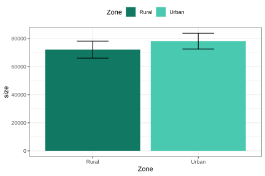
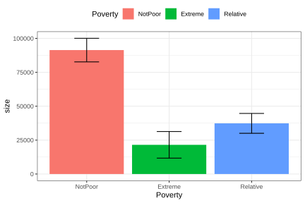
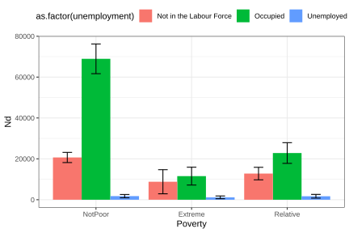
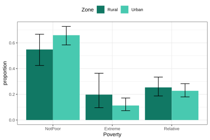
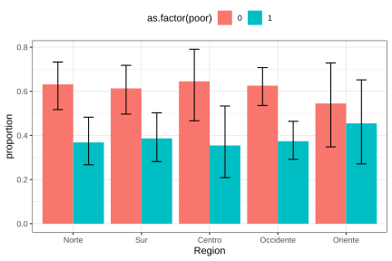
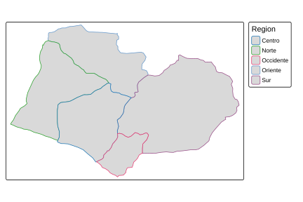
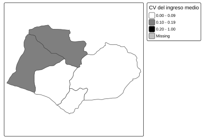
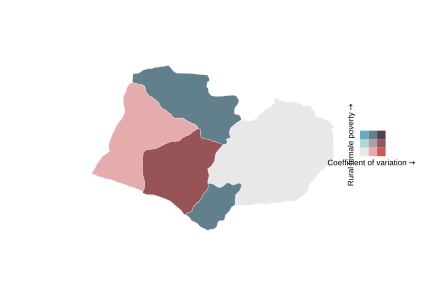

4.7 Visualización de variables categóricas
La visualización de variables categóricas es fundamental en el análisis de encuestas de hogares, ya que permite comunicar de manera clara la distribución de grupos poblacionales y las comparaciones entre ellos. Al igual que en el análisis de variables continuas, los gráficos deben incorporar los pesos muestrales para que la representación visual corresponda a estimaciones válidas a nivel poblacional. Cuando la precisión estadística es relevante, es recomendable acompañar las barras con intervalos de confianza, que comunican tanto el valor central como la incertidumbre asociada al proceso de estimación.
En esta sección se utiliza el paquete ggplot2 (Wickham, Chang, et al., 2026).
4.7.1 Gráficos de barras
La construcción de gráficos de barras en R requiere, como paso previo, obtener las estimaciones que se desean representar visualmente. En el contexto de encuestas complejas, estas estimaciones pueden calcularse mediante las funciones survey_total() o survey_prop() del paquete srvyr, dependiendo de si el interés se centra en totales poblacionales o proporciones.
A continuación, se ilustra este procedimiento utilizando el tamaño poblacional estimado por zona de residencia. Los resultados gráficos correspondientes se presentan en la Figura 4.1:
zone_size <- survey_design %>%
group_by(Zone) %>%
summarise(size = survey_total(vartype = c("se", "ci")))
zone_colors <- c(Urban = "#48C9B0", Rural = "#117864")
ggplot(
data = zone_size,
aes(
x = Zone, y = size,
ymax = size_upp, ymin = size_low,
fill = Zone
)
) +
geom_bar(stat = "identity", position = "dodge") +
geom_errorbar(position = position_dodge(width = 0.9), width = 0.3) +
scale_fill_manual(values = zone_colors) +
theme_bw() +
theme(legend.position = "top")
Figura 4.1: Gráfico de barras del tamaño poblacional por zona geográfica
El procedimiento anterior también puede aplicarse a variables con más de dos categorías. En estos casos, el gráfico de barras permite comparar de manera sencilla las estimaciones asociadas a cada categoría de la variable de interés. Por ejemplo, a continuación se presenta la distribución estimada de la población según la condición de pobreza, cuyos resultados gráficos se muestran en la Figura 4.2.
poverty_size <- survey_design %>%
group_by(Poverty) %>%
summarise(size = survey_total(vartype = c("se", "ci")))
ggplot(
data = poverty_size,
aes(
x = Poverty, y = size,
ymax = size_upp, ymin = size_low,
fill = Poverty
)
) +
geom_bar(stat = "identity", position = "dodge") +
geom_errorbar(position = position_dodge(width = 0.9), width = 0.3) +
theme_bw() +
theme(legend.position = "top")
Figura 4.2: Gráfico de barras del tamaño poblacional por condición de pobreza
Una de las ventajas de los gráficos de barras es que pueden extenderse fácilmente a comparaciones entre dos variables categóricas. Por ejemplo, se puede analizar el tamaño poblacional por nivel de pobreza cruzado con el estado de ocupación, presentada en la Figura 4.3:
employment_poverty_size <- survey_design %>%
group_by(unemployed, Poverty) %>%
summarise(size = survey_total(vartype = c("se", "ci"))) %>%
as.data.frame() %>%
mutate(
unemployed = case_when(
unemployed == 0 ~ "Occupied",
unemployed == 1 ~ "Unemployed",
is.na(unemployed) ~ "Not in the Labour Force"
)
)
ggplot(
data = employment_poverty_size,
aes(
x = Poverty, y = size,
ymax = size_upp, ymin = size_low,
fill = as.factor(unemployed)
)
) +
geom_bar(stat = "identity", position = "dodge") +
geom_errorbar(position = position_dodge(width = 0.9), width = 0.3) +
theme_bw() +
theme(legend.position = "top")
Figura 4.3: Gráfico de barras del tamaño poblacional por estado de ocupación y pobreza
Este tipo de análisis gráfico resulta especialmente útil para identificar intersecciones de vulnerabilidad, al mostrar de manera simultánea dos o más características poblacionales. También es posible presentar proporciones en lugar de conteos. Por ejemplo, la proporción de hombres en condición de pobreza por zona, presentada en la Figura 4.4:
male_zone_poverty_proportion <- male_subset %>%
group_by(Zone, Poverty) %>%
summarise(proportion = survey_prop(vartype = c("se", "ci")))
ggplot(
data = male_zone_poverty_proportion,
aes(
x = Poverty, y = proportion,
ymax = proportion_upp, ymin = proportion_low,
fill = Zone
)
) +
geom_bar(stat = "identity", position = "dodge") +
geom_errorbar(position = position_dodge(width = 0.9), width = 0.3) +
scale_fill_manual(values = zone_colors) +
theme_bw() +
theme(legend.position = "top")
Figura 4.4: Proporción de hombres en condición de pobreza por zona geográfica
De forma análoga, se puede graficar la proporción de hombres en condición de pobreza desagregada por región, presentada en la Figura 4.5:
male_region_poverty_proportion <- male_subset %>%
group_by(Region, poor) %>%
summarise(proportion = survey_prop(vartype = c("se", "ci"))) %>%
data.frame()
ggplot(
data = male_region_poverty_proportion,
aes(
x = Region, y = proportion,
ymax = proportion_upp, ymin = proportion_low,
fill = as.factor(poor)
)
) +
geom_bar(stat = "identity", position = "dodge") +
geom_errorbar(position = position_dodge(width = 0.9), width = 0.3) +
theme_bw() +
theme(legend.position = "top")
Figura 4.5: Proporción de hombres en condición de pobreza por región
En síntesis, los gráficos de barras junto con sus correspondientes errores estánar permiten una descripción clara de los patrones de pobreza, empleo u otras variables categóricas en la población, y cuando se aplican correctamente, constituyen una herramienta poderosa para comunicar hallazgos de encuestas de hogares manteniendo el rigor estadístico en la representación de los resultados.
4.7.2 Mapas
Los mapas temáticos constituyen una herramienta de visualización especialmente útil en el análisis de encuestas de hogares, ya que permiten representar la distribución territorial de indicadores sociales y demográficos. En este contexto, las estimaciones de proporciones calculadas en secciones anteriores —como el porcentaje de pobreza o desempleo por región— pueden proyectarse directamente sobre unidades geográficas, facilitando así la identificación de patrones espaciales y desigualdades regionales.
Para construir este tipo de mapas en R se requiere información geoespacial en formato shapefile, la cual contiene los polígonos asociados a cada unidad geográfica de análisis. En este capítulo se utiliza el archivo bigcity_shape/BigCity.shp, cuyas regiones corresponden a las definidas en la base de datos BigCity. Los paquetes sf (Pebesma et al., 2026) y tmap (Tennekes, 2026) permiten cargar, manipular y visualizar esta información geográfica de manera integrada con los resultados obtenidos a partir de la encuesta.
El siguiente código carga los paquetes necesarios para trabajar con información geoespacial y visualización cartográfica en R. En primer lugar, la librería sf permite leer y manipular objetos espaciales modernos, mientras que tmap proporciona herramientas para la elaboración de mapas temáticos. La instrucción tmap_mode("plot") establece el modo de visualización estática de los mapas, apropiado para documentos y reportes. Finalmente, la función read_sf() importa el archivo geográfico BigCity.shp, almacenándolo en el objeto shapeBigCity, el cual contiene los polígonos correspondientes a las regiones de análisis.
library(sf)
library(tmap)
tmap_mode("plot")
bigcity_shape <- read_sf("Data/shapeBigCity/BigCity.shp")Con el shapefile cargado, se puede generar un mapa de las regiones usando tm_shape() y tm_polygons(), como se muestra en la Figura 4.6:

Figura 4.6: Mapa de regiones geográficas de BigCity
Por ejemplo, si se desea representar geográficamente la proporción de hombres en condición de pobreza por región, estimada previamente en la Figura 4.5, es necesario integrar las estimaciones obtenidas con la información espacial del shapefile. Para ello, el objeto male_region_poverty_proportion, que contiene las proporciones estimadas para cada región, se vincula con el archivo geográfico mediante la función left_join(). Posteriormente, se filtran únicamente las observaciones correspondientes a la categoría de pobreza (poor == 1), de manera que el mapa represente exclusivamente la distribución espacial de la población masculina en condición de pobreza.
shape_region_map <- tm_shape(
bigcity_shape %>%
left_join(
male_region_poverty_proportion %>%
filter(poor == 1),
by = "Region"
)
)Una vez construido el objeto espacial con las estimaciones de interés, el argumento breaks ayuda a definir los puntos de corte que determinarán los intervalos de la escala de color utilizada en el mapa. Posteriormente, se genera el mapa temático, permitiendo visualizar la distribución regional de la proporción de hombres en condición de pobreza, como se presenta en la Figura 4.7.
poverty_breaks <- c(0, 0.2, 0.4, 0.6, 0.8, 1)
shape_region_map +
tm_polygons(
col = "proportion",
breaks = poverty_breaks,
title = "Poverty proportion",
palette = "YlOrRd"
)
Figura 4.7: Proporción de hombres en condición de pobreza por región
Otro uso de los mapas en encuestas es la visualización de la precisión de las estimaciones. Por ejemplo, usando el coeficiente de variación del ingreso medio por región es posible identificar las áreas donde las estimaciones son menos confiables, como se muestra en la Figura 4.8.
El siguiente código calcula y representa geográficamente el coeficiente de variación del ingreso medio por región. En primer lugar, la función se estima el ingreso promedio para cada región. El argumento vartype = "cv" solicita el cálculo del coeficiente de variación de cada estimación. Posteriormente, se definen los intervalos de clasificación de la escala de color mediante el objeto cv_breaks, y las estimaciones se integran con la información geográfica del shapefile usando left_join(). Finalmente, mediante las funciones tm_shape() y tm_polygons() del paquete tmap, se construye el mapa que representa espacialmente los coeficientes de variación utilizando una escala de colores en blanco y negro y ajustando la proporción del mapa con tm_layout(asp = 0).
region_mean <- survey_design %>%
group_by(Region) %>%
summarise(mean = survey_mean(Income,
na.rm = TRUE,
vartype = c("cv")))
cv_breaks <- c(0, 0.1, 0.2, 1)
shape_cv_map <- tm_shape(
bigcity_shape %>%
left_join(region_mean, by = "Region")
)
shape_cv_map +
tm_polygons(
"mean_cv",
breaks = cv_breaks,
title = "Mean income CV",
palette = c("#FFFFFF", "#000000")
) +
tm_layout(asp = 0)
Figura 4.8: Coeficiente de variación del ingreso medio por región
Los polígonos con tonos más oscuros corresponden a regiones donde la estimación del ingreso presenta mayor variabilidad relativa, lo que puede indicar tamaños muestrales insuficientes para obtener estimaciones precisas en esas áreas.
Cuando se desea representar simultáneamente dos variables —por ejemplo, la proporción de pobreza y su coeficiente de variación— es posible construir un mapa bivariante utilizando ggplot2 junto con los paquetes biscale (Prener et al., 2025) y cowplot (Wilke, 2025). Este tipo de visualización permite identificar regiones con alta pobreza y alta incertidumbre en la estimación de forma conjunta, como se presenta en la Figura 4.9. El siguiente código estima la proporción de mujeres en condición de pobreza en zonas rurales para cada región, incorporando además el cálculo del coeficiente de variación de las estimaciones, generando así una base de datos lista para la construcción de un mapa bivariado.
region_sex_poverty_proportion <- survey_design %>%
group_by(Region, Zone, Sex, poor) %>%
summarise(proportion = survey_mean(vartype = "cv")) %>%
filter(poor == 1, Zone == "Rural", Sex == "Female")El siguiente código construye un mapa bivariado que permite visualizar simultáneamente la proporción de pobreza femenina rural y el coeficiente de variación asociado a dicha estimación por región. En primer lugar, se integran las estimaciones contenidas en region_sex_poverty_proportion con la información geográfica del shapefile mediante left_join(). Posteriormente, utilizando la función bi_class() del paquete biscale, se clasifican conjuntamente las variables proportion y proportion_cv en una cuadrícula de \(3 \times 3\) categorías (dim = 3), empleando el método de clasificación de Fisher (style = "fisher"). Luego, con ggplot2 y geom_sf(), se genera el mapa temático utilizando colores bivariados definidos por bi_scale_fill(), mientras que bi_theme() aplica un estilo minimalista y se elimina la leyenda predeterminada.
A continuación, la función bi_legend() crea una leyenda especializada que permite interpretar simultáneamente ambas dimensiones del mapa: el coeficiente de variación y la pobreza femenina rural. Finalmente, mediante las funciones ggdraw() y draw_plot() del paquete cowplot, se combinan el mapa y la leyenda en una única visualización.
library(biscale)
library(cowplot)
bivariate_shape <- bigcity_shape %>%
left_join(region_sex_poverty_proportion, by = "Region")
k <- 3
bivariate_data <- bi_class(
bivariate_shape,
y = proportion,
x = proportion_cv,
dim = k,
style = "fisher"
)
bivariate_map <- ggplot() +
geom_sf(
data = bivariate_data,
aes(fill = bi_class, geometry = geometry),
colour = "white",
size = 0.1
) +
bi_scale_fill(pal = "GrPink", dim = k) +
bi_theme() +
theme(legend.position = "none")
bivariate_legend <- bi_legend(
pal = "GrPink",
dim = k,
xlab = "Coefficient of variation",
ylab = "Rural female poverty",
size = 8
)
ggdraw() +
draw_plot(bivariate_map, 0, 0, 1, scale = 0.7) +
draw_plot(bivariate_legend, 0.75, 0.4, 0.2, 0.2)
Figura 4.9: Mapa bivariante: proporción de pobreza femenina rural y su coeficiente de variación por región
En este mapa, cada celda de la leyenda combina un tono de la proporción de pobreza (eje vertical) con un tono del coeficiente de variación (eje horizontal), permitiendo identificar simultáneamente regiones con alta pobreza y alta incertidumbre en la estimación. Este tipo de representación es especialmente valioso para orientar decisiones sobre la necesidad de ampliar el tamaño muestral en zonas geográficas específicas.